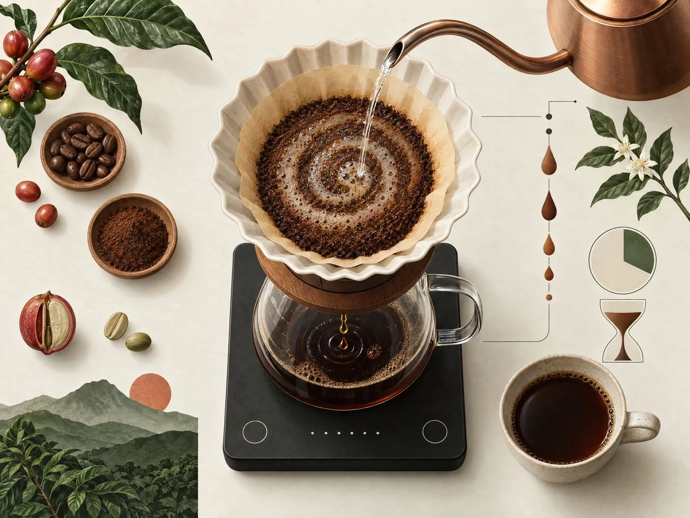
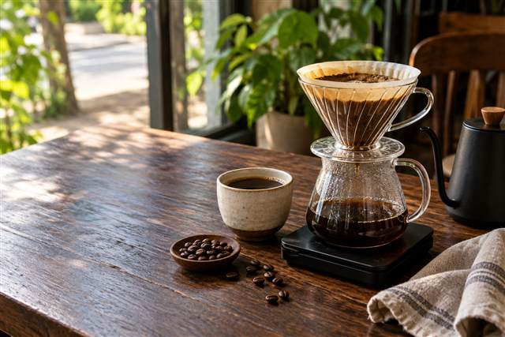

Le café en pratique,
à votre rythme.
Calculez une dose, suivez une méthode pas à pas, formulez une hypothèse sur le goût et gardez un carnet privé sur votre appareil.

Une bonne tasse est une hypothèse que l’on peut tester.
Les outils qui suivent vous aident à isoler une variable à la fois. Notez la dose, l’eau, la mouture et la sensation en bouche, puis revenez à la méthode. L’objectif n’est pas de produire une recette universelle, mais une observation reproductible.
Treize outils et des recettes, cinq familles
Choisissez une carte : l’outil s’ouvre avec sa documentation complète — à quoi il sert, quand l’utiliser, comment procéder, un exemple, la lecture du résultat, ses limites et ses sources.
Extraire · 4 outils
Quel ratio café / eau ?
Une dose de départ pour un café filtre équilibré.
06 · EspressoDose, ratio et rendement espresso
Régler un espresso à partir de repères chiffrés.
07 · ExtractionTaux d’extraction et TDS
Objectiver un réglage avec un réfractomètre.
10 · Cold brewInfusion à froid
Doses pour concentré à diluer ou prêt à boire.
Régler · 4 outils
Infusion pas à pas
Un canevas en cinq étapes, reproductible.
08 · MoutureRepères de mouture
Ordres de grandeur en microns par méthode.
09 · EauVotre eau convient-elle au café ?
TDS, dureté et alcalinité face aux repères.
03 · DiagnosticQu’est-ce qui vous gêne ?
Une piste de réglage à partir de la sensation.
Déguster · 2 outils
Gérer · 3 outils
Recettes · en préparation
Fiches recettes
Cinq fiches recettes sont en cours de relecture éditoriale. Elles rejoindront cette page après validation, avec le même niveau de documentation que les outils.
Infusion pas à pas
Le guide en cinq étapes sert déjà de canevas de recette de base pour toute méthode.
Quel ratio café / eau ?
Un point de départ pour un café filtre. La dose affichée est une proposition de recette, pas une norme universelle.

Pourquoi cet outil, et quand l’utiliser
Le ratio café/eau est la première variable d'un café filtre : il fixe la force de départ avant tout réglage de mouture ou de temps. Cet outil sert quand vous changez de cafetière, de quantité à préparer ou de café, et que vous voulez une dose de départ cohérente plutôt qu'une cuillère au hasard.
Comment procéder
- Choisissez la quantité de boisson ou de café dont vous partez.
- Lisez la dose proposée au ratio repère, puis pesez le café.
- Préparez, goûtez, et n'ajustez qu'une variable à la fois au prochain essai.
Exemple
Pour 250 g de boisson au ratio 1:16, l'outil propose 15,6 g de café. À 1:17, la même tasse demanderait environ 14,7 g : une tasse un peu plus douce.
Lire le résultat
Une tasse trop légère invite à resserrer le ratio (1:15), une tasse trop dure à l'ouvrir (1:17). Gardez le même ratio plusieurs jours avant de conclure.
Limites
La proposition est un point de départ issu des usages de la filtration, pas une norme : le café, la mouture, l'eau et la méthode déplacent la zone de réussite.
Sources : Repères usuels de la littérature de spécialité sur les ratios de filtration.
Infusion pas à pas
Un canevas simple à adapter à votre matériel. Notez chaque changement pour pouvoir reproduire le résultat.
Préparez et pesez
Pesez le café et l’eau. Rincez le filtre si votre méthode l’exige et préchauffez le récipient.
Répartissez la mouture
Versez le café moulu dans le filtre et nivelez doucement le lit sans le comprimer.
Préinfusez
Ajoutez un peu d’eau et laissez le café s’humidifier. Le temps et la quantité varient selon la méthode et la fraîcheur.
Versez progressivement
Ajoutez le reste de l’eau de façon régulière. Évitez de changer en même temps mouture, dose et agitation.
Goûtez et consignez
Laissez refroidir quelques instants, décrivez la tasse et notez les paramètres avant votre prochain essai.
Pourquoi cet outil, et quand l’utiliser
Une méthode pas à pas évite de changer trois choses à la fois sans s'en rendre compte. Ce canevas sert quand vous débutez une méthode, quand vous reprenez après un raté, ou quand vous voulez transmettre un protocole reproductible à quelqu'un.
Comment procéder
- Préparez et pesez café et eau.
- Répartissez la mouture sans la comprimer.
- Préinfusez pour humidifier le lit de café.
- Versez le reste de l'eau régulièrement.
- Goûtez et consignez les paramètres.
Exemple
Vous notez : 15 g, 250 g d'eau, préinfusion 30 s, versement en 2 min. La tasse est fade : au prochain essai, seule la mouture se resserre.
Lire le résultat
Le guide ne donne pas de temps ni de volumes fixes : il impose un ordre et une trace. La valeur est dans le carnet, pas dans le minuteur.
Limites
Chaque méthode (V60, piston, AeroPress) a ses gestes propres ; ce canevas reste volontairement générique.
Sources : Méthodologie interne du site, alignée sur les pratiques courantes de préparation manuelle.
Qu’est-ce qui vous gêne dans la tasse ?
Le résultat propose une piste de départ. La perception dépend aussi du café, de l’eau, de la méthode et de la dégustation.
Choisissez une sensation pour recevoir une piste d’essai.
Pourquoi cet outil, et quand l’utiliser
Une tasse déçoit rarement sans raison : acidité crue, amertume sèche ou corps aqueux pointent chacune vers des variables différentes. Cet outil sert quand le résultat ne plaît pas et que vous ne savez pas quoi changer en premier.
Comment procéder
- Choisissez la sensation dominante dans la liste.
- Lisez la piste proposée et la variable à tester.
- Ne changez que cette variable à l'essai suivant.
Exemple
« Trop acide ou peu développé » oriente vers une extraction insuffisante : mouture plus fine ou temps plus long, pas une dose plus forte.
Lire le résultat
La piste est une hypothèse de travail, pas un verdict. Si le premier essai aggrave le défaut, revenez en arrière et testez la variable opposée.
Limites
La perception varie d'une personne à l'autre, et le café ou l'eau peuvent être la cause réelle. L'outil structure l'essai, il ne mesure rien.
Sources : Grille de correspondance goût/extraction courante dans la littérature barista.
Mettre des mots sur les arômes
Sélectionnez une grande famille, puis les descripteurs qui vous évoquent la tasse. Ce vocabulaire est subjectif : il ne certifie ni une origine ni un score sensoriel.
Descripteurs choisis : aucun
Pourquoi cet outil, et quand l’utiliser
Mettre un mot sur ce que l'on perçoit est le premier pas pour comparer deux cafés ou suivre ses progrès en dégustation. Cette roue sert pendant la dégustation, seule ou à plusieurs, pour structurer ce que le nez et la bouche rapportent.
Comment procéder
- Choisissez une grande famille (fruits, floral, sucré, grillé, épices).
- Sélectionnez les descripteurs qui évoquent la tasse.
- Confrontez vos mots à ceux des autres dégustateurs ou à votre carnet.
Exemple
Un robusta lavé peut évoquer « grillé & cacao » puis « chocolat » ; un arabica nature plutôt « fruits » puis « fruits rouges ».
Lire le résultat
Les descripteurs sont un vocabulaire partagé, pas un score : deux personnes peuvent choisir des mots différents pour la même tasse sans que l'une ait tort.
Limites
L'exercice est subjectif par nature. Il ne certifie ni une origine, ni un défaut, ni une qualité commerciale.
Sources : Vocabulaire inspiré des roues aromatiques usuelles du café de spécialité.
Garder une trace de vos dégustations
Enregistrez vos notes sur cet appareil, exportez-les ou effacez-les quand vous le souhaitez.
Les notes peuvent contenir des informations personnelles : l’export les place dans le fichier téléchargé. Le site ne les reçoit pas.
Pourquoi cet outil, et quand l’utiliser
La mémoire d'une tasse s'use en quelques jours ; sans trace, chaque essai repart de zéro. Ce carnet sert à qui teste des cafés, des moutures ou des méthodes et veut comparer dans la durée, sans compte ni envoi de données.
Comment procéder
- Après chaque dégustation, enregistrez date, méthode, café et notes.
- Relisez les entrées avant le prochain achat ou réglage.
- Exportez le carnet en CSV pour le sauvegarder ; effacez-le quand vous voulez.
Exemple
Trois entrées sur le même café montrent que la mouture 6 donne toujours une tasse sèche : le problème est identifié, pas deviné.
Lire le résultat
Le carnet n'a de valeur que s'il est rempli régulièrement et relu. Une note courte vaut mieux qu'une note parfaite jamais écrite.
Limites
Les notes restent sur cet appareil : changement de navigateur ou de téléphone = carnet vide, sauf export. Elles peuvent contenir des informations personnelles.
Sources : Outil interne du site, stockage local uniquement.
Dose, ratio et rendement espresso
Un point de départ chiffré pour régler un espresso. Ce sont des repères issus des pratiques barista, pas une recette universelle : le café, la mouture et la machine décident au final.
Pourquoi cet outil, et quand l’utiliser
L'espresso concentre toutes les variables : une dose et un ratio de départ évitent de régler à l'aveugle. Cet outil sert quand vous changez de café, de panier ou de machine, et quand vous voulez relier rendement en tasse et extraction.
Comment procéder
- Pesez la dose sèche dans le panier.
- Choisissez un ratio repère (ristretto à lungo).
- Pesez la boisson obtenue et ajustez la mouture au goût.
- Si vous avez un réfractomètre, ajoutez la TDS pour estimer le rendement.
Exemple
18 g de café au ratio 1:2 visent environ 36 g de boisson. Une tasse trop rapide et acide invite à resserrer la mouture, pas à changer la dose.
Lire le résultat
Le rendement affiché est une estimation : il devient utile comparé à lui-même d'un essai à l'autre, pas face à un chiffre absolu.
Limites
Repères issus des pratiques barista ; chaque machine, café et panier déplace la zone de réussite. Sans réfractomètre, le goût reste la mesure.
Sources : Usages barista documentés ; plages de concentration espresso citées dans la littérature de spécialité.
Taux d’extraction et TDS
Pour qui possède un réfractomètre : le taux d’extraction compare ce qui a été dissous à la dose de départ. Les plages citées sont des repères usuels de la littérature de spécialité, pas des normes.
Pourquoi cet outil, et quand l’utiliser
Le taux d'extraction dit quelle part du café s'est dissoute dans la tasse : c'est la mesure qui relie une recette à un résultat. Cet outil sert à qui possède un réfractomètre et veut objectiver ses réglages.
Comment procéder
- Pesez la dose de café et la boisson obtenue.
- Mesurez la TDS de la boisson au réfractomètre.
- Lisez le taux calculé et comparez-le aux plages repères.
Exemple
20 g de café, 300 g de boisson à 1,3 % de TDS donnent un taux d'environ 19,5 %, dans la zone usuellement citée pour le filtre.
Lire le résultat
Les plages historiques (souvent 18 à 22 % d'extraction, 1,15 à 1,35 % de TDS en filtre) sont des repères statistiques, pas des cibles : certains cafés excellent en dehors.
Limites
Le calcul suppose une mesure de TDS fiable et homogène. Une erreur de pesée de 2 g déplace le résultat autant qu'un vrai changement de réglage.
Sources : Plages issues de la littérature d'extraction (héritage SCAA) ; concentrations usuelles filtre et espresso citées par les références barista.
Repères de mouture par méthode
Des ordres de grandeur en microns pour partir d’un réglage raisonnable. Aucune équivalence exacte n’existe entre moulins : servez-vous de la texture repère et ajustez au goût.
Pourquoi cet outil, et quand l’utiliser
La mouture est la variable la plus sensible et la moins lisible : aucun moulin n'affiche les microns. Cet outil sert quand vous changez de méthode ou de moulin et cherchez un réglage de départ plausible.
Comment procéder
- Choisissez votre méthode pour lire la plage repère en microns et la texture associée.
- Ou entrez une taille en microns pour voir à quelles méthodes elle correspond.
- Ajustez ensuite au goût, par petits pas.
Exemple
Le filtre manuel se situe autour de 550 à 850 µm, texture « sel fin » ; l'espresso bien plus bas, texture « sucre glace ».
Lire le résultat
La texture repère (sel, sable, sucre glace) est souvent plus utile que le chiffre : elle se vérifie entre les doigts sans matériel.
Limites
Aucune équivalence exacte n'existe entre moulins : le même chiffre de réglage produit des tailles différentes. Les plages sont des ordres de grandeur, pas des prescriptions.
Sources : Tableaux de correspondance méthode/microns publiés par les références de torréfaction et fabricants de moulins.
Votre eau convient-elle au café ?
Trois mesures distinctes figurent parfois sur les étiquettes ou analyses d’eau. Comparez-les aux repères du standard SCAA pour l’eau de brassage, sans les convertir entre elles.
Pourquoi cet outil, et quand l’utiliser
L'eau compose l'essentiel de la tasse : une eau très minéralisée ou très douce change l'extraction et le goût. Cet outil sert quand vous lisez une étiquette d'eau en bouteille ou une analyse d'eau du robinet avant de brasser.
Comment procéder
- Relevez sur l'étiquette le TDS, la dureté totale et l'alcalinité si elles figurent.
- Entrez chaque mesure dans son champ propre, sans les convertir entre elles.
- Comparez chaque valeur aux repères du standard d'eau de brassage.
Exemple
Une eau à 30 mg/L de TDS extravera différemment d'une eau à 300 mg/L ; aucune n'est « interdite », mais la tasse ne sera pas la même.
Lire le résultat
Trois mesures distinctes : le TDS compte tout ce qui est dissous, la dureté vise calcium et magnésium, l'alcalinité mesure le pouvoir tampon. Une valeur seule ne résume pas une eau.
Limites
Les repères cités décrivent une zone jugée favorable au brassage, pas une obligation sanitaire ni gustative. Beaucoup de bonnes tasses sortent de cette zone.
Sources : Standard d'eau de brassage SCAA, valeurs de référence publiées.
Infusion à froid : doses et dilution
Deux façons de préparer : un concentré à diluer, ou un café directement prêt à boire. Ratios repères usuels, à adapter à votre goût.
Pourquoi cet outil, et quand l’utiliser
L'infusion à froid demande des heures : se tromper de dose coûte une journée. Cet outil sert avant de lancer un concentré à diluer ou un café prêt à boire, pour partir d'un ratio plausible.
Comment procéder
- Entrez la quantité d'eau prévue.
- Choisissez entre concentré (à diluer au service) et prêt à boire.
- Respectez le temps long d'infusion à froid, puis filtrez.
Exemple
Pour 1 000 g d'eau, un concentré repère demande beaucoup plus de café qu'un prêt-à-boire ; le concentré se dilue ensuite au verre, souvent à parts comparables.
Lire le résultat
Le résultat donne des masses de départ. La force finale se règle à la dilution pour le concentré, au ratio initial pour le prêt-à-boire.
Limites
Température, mouture, durée et café déplacent fortement le résultat ; les ratios sont des repères usuels, pas des recettes garanties.
Sources : Ratios usuels publiés par les torréfacteurs spécialisés en infusion à froid.
Estimer la caféine d’une tasse
Un ordre de grandeur à partir de la dose et de l’espèce. La teneur réelle varie fortement d’un café à l’autre : cette estimation n’est ni une mesure ni un repère de santé.
Pourquoi cet outil, et quand l’utiliser
La caféine varie du simple au double selon l'espèce : robusta et arabica ne se valent pas. Cet outil sert pour estimer un ordre de grandeur quand on compare deux cafés ou qu'on raisonne sa consommation.
Comment procéder
- Entrez la dose de café sec de votre tasse.
- Choisissez l'espèce (arabica, robusta ou mélange).
- Lisez la fourchette estimée.
Exemple
15 g de robusta contiennent en moyenne nettement plus de caféine que 15 g d'arabica : le même « nombre de tasses » ne dit pas la même dose.
Lire le résultat
Le résultat est une fourchette, jamais un chiffre exact : la teneur réelle varie avec le lot, la torréfaction et l'extraction.
Limites
Cette estimation n'est ni une mesure ni un conseil de santé. Pour toute question médicale liée à la caféine, seul un professionnel de santé peut répondre.
Sources : Fourchettes de teneur en caféine par espèce issues de la littérature scientifique publiée.
Combien coûte une tasse ?
Le prix d’une tasse maison à partir d’un paquet acheté. Utile pour comparer avec le café pris dehors.
Pourquoi cet outil, et quand l’utiliser
Le prix d'un paquet ne dit pas le prix d'une tasse : c'est la dose qui fait le lien. Cet outil sert pour comparer le café maison au café pris dehors, ou deux paquets de prix et poids différents.
Comment procéder
- Entrez le prix et le poids du paquet.
- Indiquez votre dose habituelle par tasse.
- Comparez le coût par tasse à vos habitudes de consommation.
Exemple
Un paquet de 250 g à 2 500 FCFA avec une dose de 16 g revient à 160 FCFA la tasse, à comparer au prix d'un espresso en terrasse.
Lire le résultat
Le calcul est exact arithmétiquement ; ce qu'il ne dit pas, c'est la qualité ni le plaisir par franc dépensé.
Limites
Ne compte ni l'eau, ni l'énergie, ni le matériel : c'est le coût du café seul, en FCFA saisis par vos soins.
Sources : Calcul interne du site, sans hypothèse externe.
Où en est mon café depuis la torréfaction ?
La date de torréfaction, souvent sur le paquet, aide à lire l’état du café. Ces repères sont généraux : torréfaction, stockage et conditionnement font varier les durées.
Pourquoi cet outil, et quand l’utiliser
Un café évolue après torréfaction : il dégaze, s'ouvre, puis s'épuise. Cet outil sert quand le paquet indique une date de torréfaction et que vous voulez savoir où en est le café avant de régler votre mouture.
Comment procéder
- Relevez la date de torréfaction sur le paquet.
- Entrez-la : l'outil compte les jours calendaires écoulés.
- Lisez le repère de phase correspondant.
Exemple
Un café torréfié depuis dix jours est souvent dans une phase favorable ; le même à soixante jours demande des ajustements et des attentes modérées.
Lire le résultat
Les phases proposées sont des repères généraux : un café très frais peut être agité en tasse, un café âgé n'est pas « perdu » mais plus discret.
Limites
Torréfaction, conditionnement (valve, vide) et stockage font varier fortement les durées. La date de péremption n'est pas une date de torréfaction.
Sources : Travaux sur le dégazage du café torréfié (Illy & Viani) et usages de la filière spécialité.